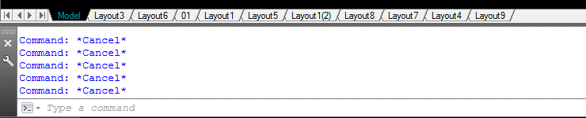

Renumber Layouts
This page is delivered for consistency purposes only, as part of the LeeMac sample module of DynALisp, which shows how DynALisp turns existing AutoLISP programs into a module. The program and its description are the work of Lee Mac, who keeps all the credit for them. The original page, with the latest version, is on Lee Mac's website: https://lee-mac.com/renumberlayouts.html
| Function Syntax | LM-RenumberLayouts – original syntax: RL (see aliases) |
| Current Version | 1.2 |
| Compatible with AutoCAD for Mac? | No |
| Compatible with AutoCAD LT? | Yes |
| Original Page | lee-mac.com/renumberlayouts.html |
Program Description
This program enables the user to automatically sequentially renumber all or specific Paperspace layouts, with an optional starting number, prefix and/or suffix.
The layouts are renumbered in the order in which they appear in the active drawing, with a configurable parameter defining the number of digits constituting the numerical portion of the layout name.
The user may optionally predefine a starting number, fixed prefix and/or suffix within the program parameters, or, if such parameters remain undefined, the program will prompt the user to specify an optional starting number, prefix and suffix upon invoking the command.
Program Parameters
Upon opening the open-source AutoLISP (.lsp) program file in a plain text editor (such as Windows Notepad) or, better yet, a code editor (such as Notepad++), you will find the following Program Parameters section of code located just beneath the code header:
;;----------------------------------------------------------------------;; ;; Program Parameters ;; ;;----------------------------------------------------------------------;; ;; Optional Predefined Layout Prefix ;; Set to nil to prompt the user, or "" for no prefix. pre nil ;; Optional Predefined Layout Suffix ;; Set to nil to prompt the user, or "" for no suffix. suf nil ;; Optional Predefined Starting Number ;; Set to nil to prompt the user int nil ;; Number of Numerical Digits ;; e.g. 1 = "1", 2 = "01", 3 = "001" pad 2 ;;----------------------------------------------------------------------;;
Here, you can predefine a starting number, static layout prefix and/or suffix, and also alter the number of digits constituting the numerical portion of the layout name, thereby controlling the number of leading zeroes.
Demonstration

Bundled program notes
;;------------------------=={ Renumber Layouts }==----------------------;;
;; ;;
;; This program enables the user to automatically sequentially ;;
;; renumber all Paperspace layouts, with an optional prefix and/or ;;
;; suffix. ;;
;; ;;
;; The layouts are renumbered in the order in which they appear in ;;
;; the active drawing, with a configurable parameter defining the ;;
;; number of digits constituting the numerical portion of the layout ;;
;; name. ;;
;; ;;
;; The user may optionally predefine a fixed prefix and/or suffix ;;
;; within the 'Program Parameters' section of the source code below, ;;
;; or, if such parameters are set to nil, the program will prompt the ;;
;; user to specify the prefix and suffix upon invoking the command. ;;
;;----------------------------------------------------------------------;;
;; Author: Lee Mac, Copyright © 2020 - www.lee-mac.com ;;
;;----------------------------------------------------------------------;;
;; Version 1.0 - 2020-01-26 ;;
;; ;;
;; - First release. ;;
;;----------------------------------------------------------------------;;
;; Version 1.1 - 2020-09-05 ;;
;; ;;
;; - Added option to specify layout starting number. ;;
;;----------------------------------------------------------------------;;
Command Names And Aliases
As in every DynALisp module, each program of this sample module has one main command, named LM-*, and the original command names of Lee Mac's page are kept as its aliases: they run the same command, and can be added, renamed or removed in Dyl-Suite (saved in Resources\Aliases.csv).
| Command | Aliases | Name |
|---|---|---|
| LM-RenumberLayouts | RL | Renumber Layouts |